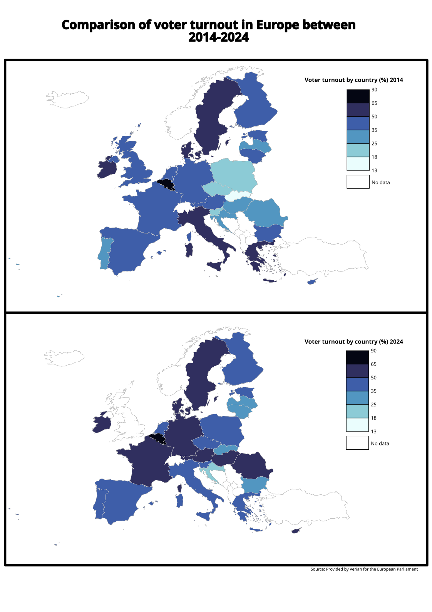
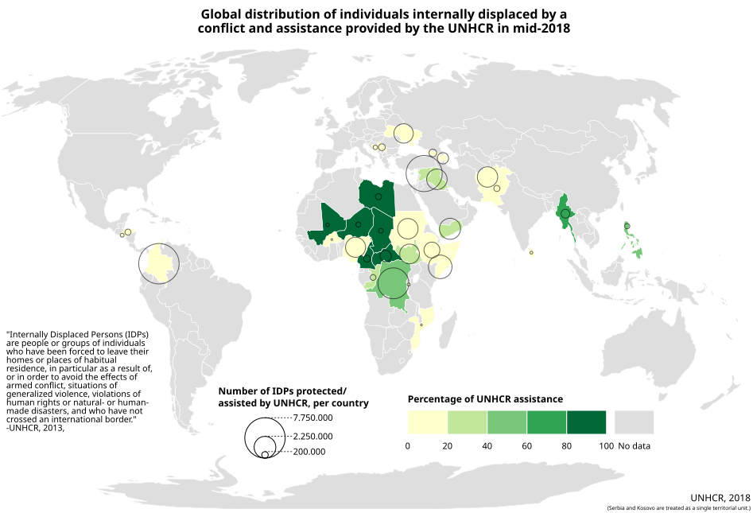
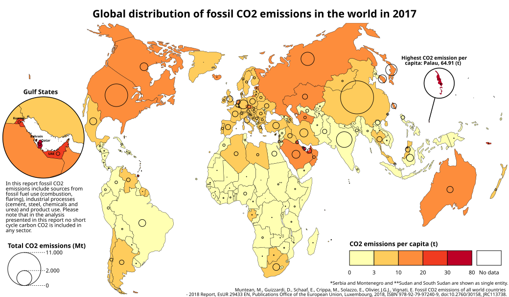

Visualizing Data Through Maps
This map shows differences in voter participation across EU countries. One of the first maps that I created

This map shows regional patterns of internally displaced populations using two quantitative variables represented through different visual elements.

This map shows clear distinction of total and per-capita CO2 emissions. Visually showin outliers while keeping target audiance in mind. This map is one of my latest work as well.
